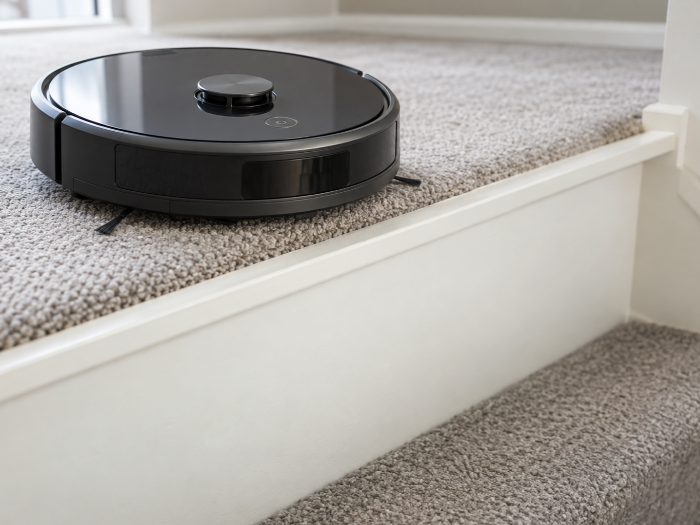
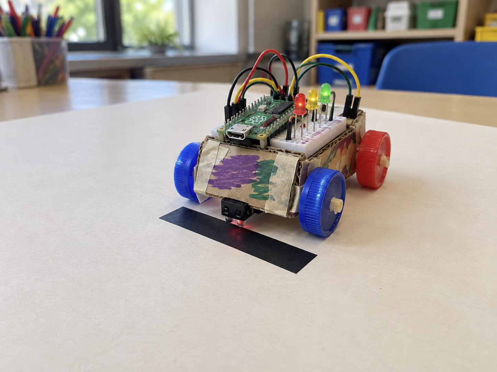
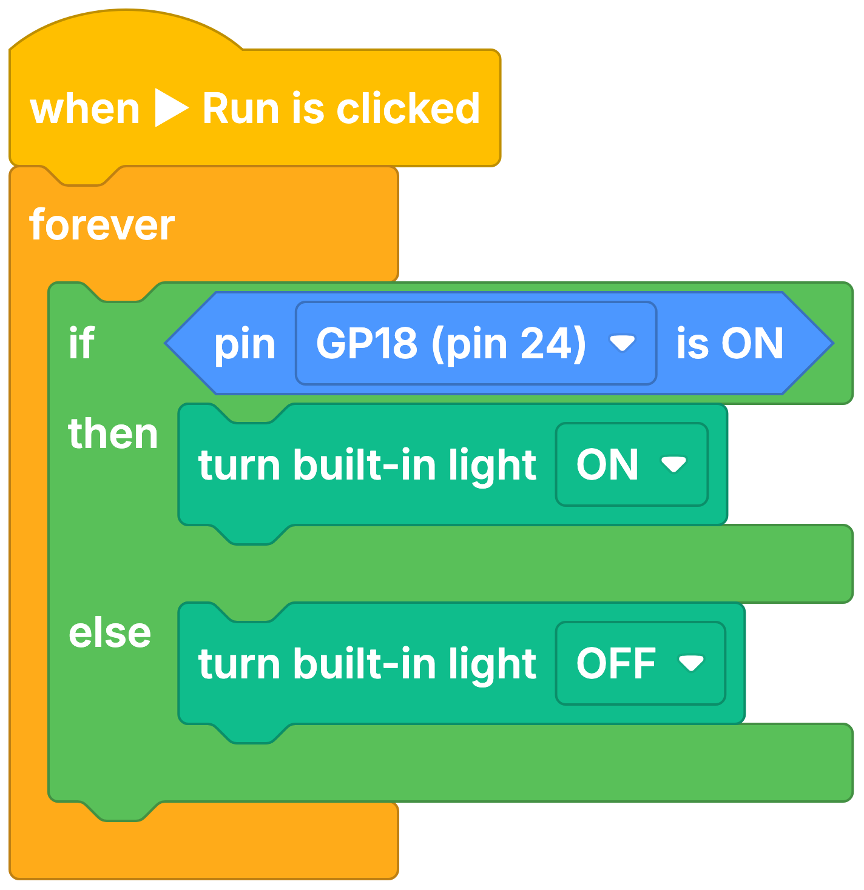

Warehouse guide-line robot
DetectRead guide-line position
DecideIs the vehicle drifting?
DoCorrect the steering
A line sensor tells light and dark surfaces apart underneath a moving project.
An infrared LED shines at the floor and a detector measures how much light bounces back.
Adjust the small potentiometer until its digital output changes reliably at the line edge.


